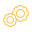

<mat-sidenav-container id="sidenavbarContainer" [(hasBackdrop)]="hasBackdrop">
  <mat-sidenav
    id="sidenavbar"
    [(mode)]="mode"
    [(opened)]="isSideNavbarOpen"
    [class.sidenavbar-is-opened]="isSideNavbarOpen"
    role="region"
    #nav
  >
    <!-- sidenavbar content here -->
    <div class="sidenavbar-content-container">
      <div>
        <!-- sidenavbar header -->
        <div class="sidenavbar-header">
          
        </div>

        <mat-divider></mat-divider>

        <!--  logout -->
        <div class="logout-container">
          <ng-container *ngIf="profilePict !== null; else elseTemplate">
            <div class="icon-anonymous">
              
            </div>
          </ng-container>
          <ng-template #elseTemplate>
            <div class="icon-anonymous">
              
            </div>
          </ng-template>
          <div class="full-name" [matTooltip]="fullName">{{ fullName }}</div>
          <div class="logout">
            
          </div>
        </div>

        <mat-divider></mat-divider>

        <!-- menu -->

        <div class="logout-container">
          &nbsp; &nbsp;
          <a
            class="menu-item"
            [routerLink]="['/info']"
            routerLinkActive="router-link-active"
            >{{ "MENU.VOS_info" | translate }}
          </a>
        </div>
        <mat-divider></mat-divider>
        <div class="logout-container">
          &nbsp; &nbsp;
          <a
            class="menu-item"
            [routerLink]="['/motdepasse']"
            routerLinkActive="router-link-active"
            >{{ "MENU.GMDP" | translate }}
          </a>
        </div>
        <mat-divider></mat-divider>
        <div class="logout-container" *ngIf="role === 'ADMIN'">
          &nbsp; &nbsp;
          <a
            class="menu-item"
            [routerLink]="['/parametrage']"
            routerLinkActive="router-link-active"
            >{{ "MENU.PARAMETRAGE" | translate }}
          </a>
        </div>
      </div>
      <!--version -->

      <!-- sidenavbar footer  {{"APROPOS" | translate}} (click)="openApropos()" -->

      <div class="sidenavbar-footer">
        <div class="mes-modules-container">
          <div class="mes-modules-icon2"></div>
          <div class="mes-modules-titre menu-item cursor no-outline">
            <p class="info-version-date-release">A propos : v 1.0</p>
          </div>
        </div>
        <div class="container">
          <div class="logo-sofrecom">
            
          </div>

          <!--<div class="version-container">
            <span
              class="version"
              [ngClass]="{
                class1: nav._getWidth() === 312,
                class2: nav._getWidth() != 312
              }"
             >{{ version }}</span
            >
          </div>-->
          <div class="lang-container">
            <span class="version">
              <div class="lang-button">
                <button
                  mat-button
                  [matMenuTriggerFor]="langMenu"
                  class="mes-modules-titre menu-item cursor no-outline"
                >
                  <mat-icon hidden>language</mat-icon>
                  <span class="lang-font" *ngIf="currentLang !== null">
                    {{ currentLang.code | uppercase }}</span
                  >
                  <mat-icon>arrow_drop_down</mat-icon>
                </button>
              </div>
              <mat-menu #langMenu="matMenu">
                <button
                  mat-menu-item
                  *ngFor="let lang of languages"
                  (click)="changeLang(lang.code)"
                >
                  {{ lang.libelle }}
                </button>
              </mat-menu>
            </span>
          </div>
        </div>
      </div>
    </div>
    <!-- end of sidenavbar content -->
  </mat-sidenav>
  <mat-sidenav-content role="main">
    <!-- page content here  -->
    <div class="navbar">
      <mat-toolbar id="main-toolbar">
        
      </mat-toolbar>
    </div>
    <div class="content">
      <router-outlet></router-outlet>
    </div>
    <!--  end of page content -->
  </mat-sidenav-content>
</mat-sidenav-container>
